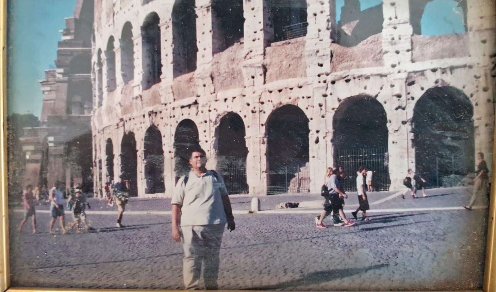
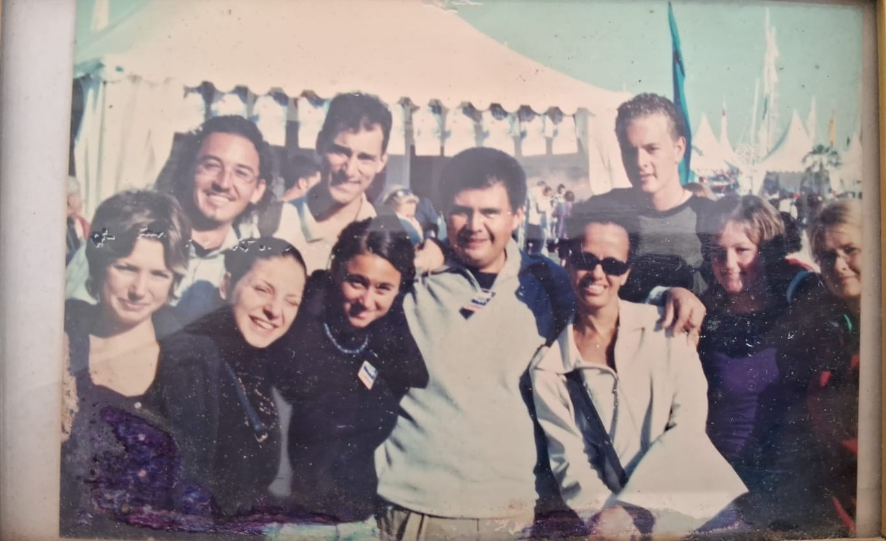
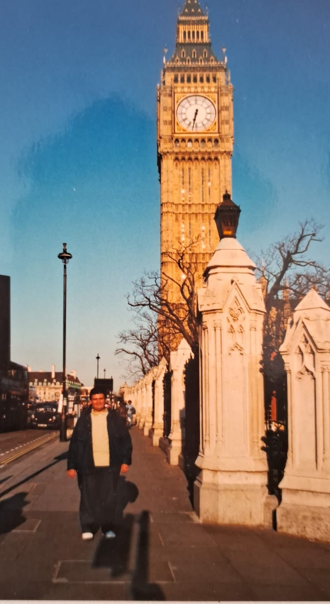
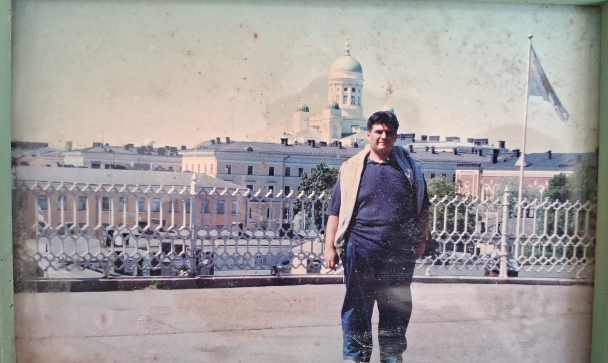
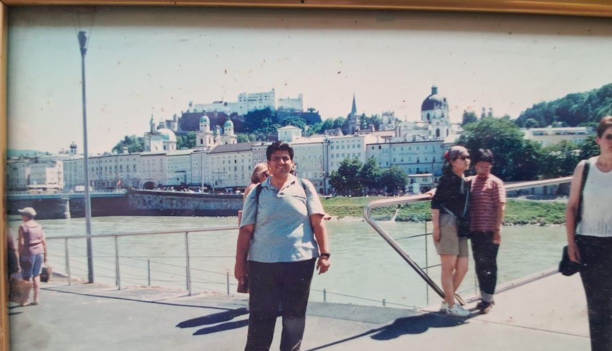
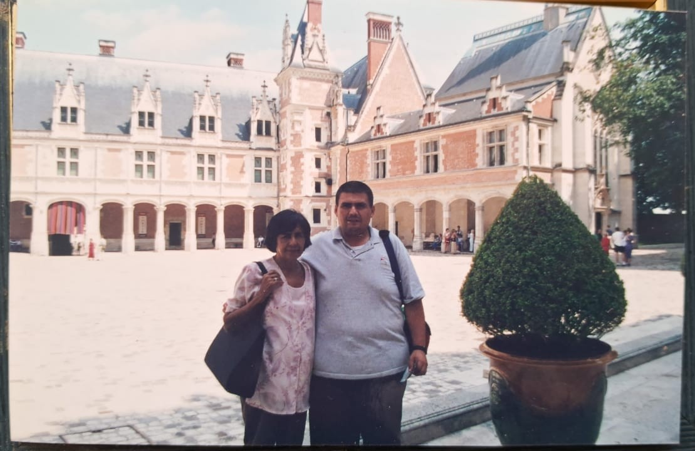

🌍 Experiencia General
Países visitados (en orden):
¿Cómo te preparaste para el viaje?
Desde los 13 años soñaba con viajar a Europa, leyendo revistas y viendo películas como 007. Intentó a los 16, pero su madre no lo permitió. Años después, logró cumplir su sueño.
¿Tuviste algún choque cultural?
En Egipto: diferente forma de vestir, idioma, alfabeto, números y saludos.
Momento más memorable:
La primera vez que vio la Torre Eiffel al atardecer desde el Trocadero. La emoción fue tan fuerte que casi se desmaya. La ha visitado 5 veces desde entonces.
La primera vez que vio la Torre Eiffel al atardecer desde el Trocadero. La emoción fue tan fuerte que casi se desmaya. La ha visitado 5 veces desde entonces.
🍽️ Comida y Cultura
Comidas memorables:
- París: Tartare (carne cruda con almendras, aceitunas, especias y yema de huevo crudo).
- España: Paella (mucho mejor que la versión mexicana), y embutidos como chorizo, morcilla y carnes secas.
¿Festivales o eventos especiales? No visitó ninguno.
Interacción con los locales:
La gente fue muy acogedora, incluso más amable que en México. Muy interesantes y abiertos.
📸 Galería del Viaje
Roma

El Coliseo Romano, símbolo de la historia y la grandeza de Roma. Un lugar donde el pasado cobra vida entre piedras milenarias.
La Rochelle, Francia

Grand Pavois: Salón náutico internacional en La Rochelle, Francia. Uno de los eventos marítimos más importantes de Europa, lleno de innovación y tradición.
Londres

El Big Ben está en Londres. ¿Sabías que "Big Ben" es el apodo de la campana y no de la torre? La torre se llama "Elizabeth Tower", y es uno de los íconos más fotografiados del mundo.
Helsinki, Finlandia

Recorriendo las calles de Helsinki. A veces lo perfecto puede ser aburrido; el caos da sabor a la vida. Una ciudad moderna rodeada de naturaleza.
Viena, Austria

El Palacio de Schönbrunn en Viena, Austria. Lugar donde nació Mozart, su segundo compositor favorito. Un paseo por la historia y la música clásica.
Valle del Loira, Francia

El Valle del Loira es famoso por sus castillos y paisajes impresionantes. Un destino de cuento de hadas en el corazón de Francia.